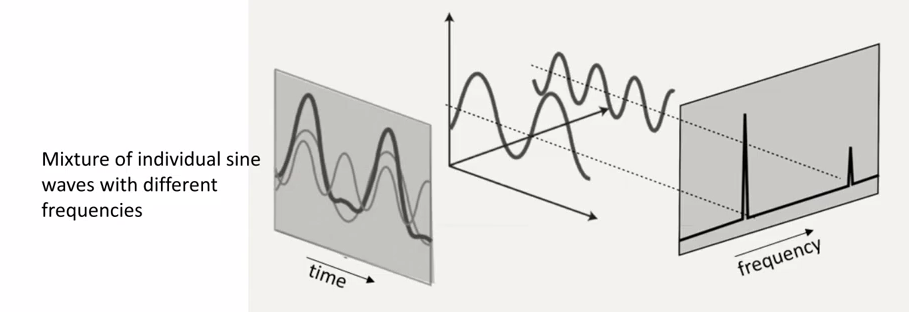

from skimage import io from skimage.filters import gaussian, sobel img = io.imread("images/Osteosarcoma_01_25Sigma_noise.tif") plt.imshow(img) gaussian_using_skimage = gaussian(img, sigma=1, mode='constant', cval=0.0) plt.imshow(gaussian_using_skimage)
C:\Users\gzjzx\anaconda3\envs\wxpython37\lib\site-packages\skimage\_shared\utils.py:348: RuntimeWarning: Images with dimensions (M, N, 3) are interpreted as 2D+RGB by default. Use `multichannel=False` to interpret as 3D image with last dimension of length 3.
return func(*args, **kwargs)
<matplotlib.image.AxesImage at 0x212dbb52848>
sobel 边缘检测
1 2 3
img_gray = io.imread("images/Osteosarcoma_01.tif", as_gray=True) sobel_img = sobel(img_gray) #Works only on 2D (gray) images plt.imshow(sobel_img, cmap='gray')
<matplotlib.image.AxesImage at 0x212dc0185c8>
## Tutorial 30 - Basic image processing using opencv in python
#Radius defines the degree of blurring #Amount defines the multiplication factor for original - blurred image unsharped_img = unsharp_mask(img, radius=3, amount=2)
gaussian_using_skimage = gaussian(img, sigma=1, mode='constant', cval=0.0) #sigma defines the std dev of the gaussian kernel. SLightly different than #how we define in cv2
C:\Users\gzjzx\AppData\Local\Temp\ipykernel_11200\3289355486.py:7: FutureWarning: `multichannel` is a deprecated argument name for `estimate_sigma`. It will be removed in version 1.0. Please use `channel_axis` instead.
sigma_est = np.mean(estimate_sigma(img, multichannel=True))
C:\Users\gzjzx\AppData\Local\Temp\ipykernel_11200\4037562389.py:1: FutureWarning: `multichannel` is a deprecated argument name for `denoise_nl_means`. It will be removed in version 1.0. Please use `channel_axis` instead.
denoise_img = denoise_nl_means(img, h=1.15 * sigma_est, fast_mode=True,
C:\Users\gzjzx\AppData\Local\Temp\ipykernel_8228\1044631449.py:1: FutureWarning: `multichannel` is a deprecated argument name for `denoise_tv_chambolle`. It will be removed in version 1.0. Please use `channel_axis` instead.
denoise_img = denoise_tv_chambolle(img, weight=0.1, eps=0.0002, n_iter_max=200, multichannel=True)
Tutorial 38 - Image filtering in python - Edge detection
Edge Detection filters: 边缘检测滤波器
Roberts
Apply a horizontal and vertical filter one after the other. 依次使用 Horizontal 和 Vertical 滤镜。
Both filters are applied (convoluted) to the image. 两个过滤器都被应用到图像上(卷积)。
Computes the sum of the squares of the differences between diagonally adjacent pixels. 计算对角线相邻像素之间的差的平方和。
It highlights regions of high spatial which often correspond to edges. 它突出了高空间区域，通常对应于边缘。
Sobel
Very similar to Roberts excerpt with a 3×3 operator. 与 Roberts 非常相似，只是使用了3×3操作符
Scharr
Typically used to identify gradients along the x-axis (dx=1, dy=0) and y-axis(dx=0, dy=1) independently. 通常用于分别识别沿 x 轴(dx=1, dy=0)和 y 轴(dx=0, dy=1)的梯度。
Performance is quite similar to Sobel filter. 其性能与 Sobel 滤波器非常相似。
Farid
Farid and Simoncelli propose to use a pair of kernels, one for interpolation and another for differentiation (similar to Sobel). Farid 和 Simoncelli 建议使用一对核，一个用于插值，另一个用于微分(类似于 Sobel)。
Fixed size kernels: 5×5 (interpolation) and 7×7 (differentiation) 固定大小的内核:5×5(插值)和7×7(分化)
Prewitt
The Prewitt operator is similar to Sobel, excerpt for the operator values.
Very fast, similar to Sobel.
1 2 3
import cv2
img = cv2.imread('images/sandstone.tif', 0)
1 2 3 4 5 6
from skimage.filters import roberts, sobel, scharr, prewitt
Tutorial 39 - Image filtering in python - Edge detection using Canny
Multi stage algorithm for edge detection: 多阶段边缘检测算法
Step 1: Noise reduction - typically uses Gaussian (but any denoising can be used) 降噪-通常使用高斯(但也可以使用任何降噪)
Step 2: Gradient calculation - detect edges, typically along 4 directions, horizontal, vertical, and two diagonals. (e.g. use Sobel) 梯度计算-检测边缘，通常沿 4 个方向，水平，垂直和两个对角线。
(如使用 Sobel)
Step 3: Non-maximum suppression - thin out edges by finding pixels with max value in the edge direction. 非最大抑制-通过在边缘方向上找到最大值像素来减少边缘。
Step 4: Double threshold - determines potential edges by double thresholding to obtain strong, weak and irrelevant pixels for edges. 双阈值-通过双阈值确定潜在的边缘，获得边缘的强、弱和无关像素。
Step 5: Edge tracking by hysteresis - covert weak edge pixels to strong based on neighboring pixels. 边缘跟踪的迟滞-隐藏弱边缘像素到强基于邻近像素。
# apply automatic Canny edge detection using the computed median lower = int(max(0, (1.0 - sigma) * median)) #Lower threshold is sigma % lower than median #If the value is below 0 then take 0 as the value
upper = int(min(255, (1.0 + sigma) * median)) #Upper threshold is sigma% higher than median #If the value is larger than 255 then take 255 a the value
Fourier transform breaks a function (signal) into an alternate representation (using sine and cosines)
傅里叶变换将一个函数(信号)分解成另一种表示形式(使用正弦和余弦)
In other words, Fourier Transform shows that any signal can be reconstructed by summing up individual sine waves of different frequencies.
换句话说，傅里叶变换表明，任何信号都可以通过将不同频率的单个正弦波相加来重构。

Continuous 连续傅里叶变换
x=∫−∞∞X(t)⋅e−j2πftdt
Discrete 离散傅里叶变换
$x = \frac { 1 } { N } \Sigma ^ { N - 1 } _ { n = 0 } x ( { \color { Red } n } ) \cdot e ^ { - \frac { { \color {Blue}j _ {2 \pi } }kn } { N } } $
n: Input signal (pixel value)
j2π: Complex number
代码
创建一个正弦波
1 2 3
import cv2 import matplotlib.pyplot as plt import numpy as np
1 2 3 4 5 6 7 8 9
# Generate a 2D sine wave image x = np.arange(256) # generate values from 0 to 255 (our image size) y = np.sin(2 * np.pi * x / 3) # calculate sine of x values # Divide by a smaller number above to increase the frequency. y += max(y) # offset sine wave by the max value to go out of negative range of sine
# Generate a 256 * 256 image (2D array of the sine wave) # create 2-D array of sine-wave img = np.array([[y[j] * 127for j inrange(256)] for i inrange(256)], dtype=np.uint8)
1
plt.imshow(img)
<matplotlib.image.AxesImage at 0x246a404a700>
1 2 3 4 5 6 7 8 9 10 11 12
# 改变频率 # Generate a 2D sine wave image x = np.arange(256) # generate values from 0 to 255 (our image size) y = np.sin(2 * np.pi * x / 30) # calculate sine of x values # Divide by a smaller number above to increase the frequency. y += max(y) # offset sine wave by the max value to go out of negative range of sine
# Generate a 256 * 256 image (2D array of the sine wave) # create 2-D array of sine-wave img = np.array([[y[j] * 127for j inrange(256)] for i inrange(256)], dtype=np.uint8)
#Shift DFT. First check the output without the shift #Without shifting the data would be centered around origin at the top left #Shifting it moves the origin to the center of the image. dft_shift = np.fft.fftshift(dft)
#Calculate magnitude spectrum from the DFT (Real part and imaginary part) #Added 1 as we may see 0 values and log of 0 is indeterminate magnitude_spectrum = 20 * np.log((cv2.magnitude(dft_shift[:, :, 0], dft_shift[:, :, 1]))+1)
#As the spatial frequency increases (bars closer), #the peaks in the DFT amplitude spectrum move farther away from the origin
#Center represents low frequency and the corners high frequency (with DFT shift). #To build high pass filter block center corresponding to low frequencies and let #high frequencies go through. This is nothing but an edge filter.
# Band Pass Filter - Concentric circle mask, only the points living in concentric circle are ones rows, cols = img.shape crow, ccol = int(rows / 2), int(cols / 2)